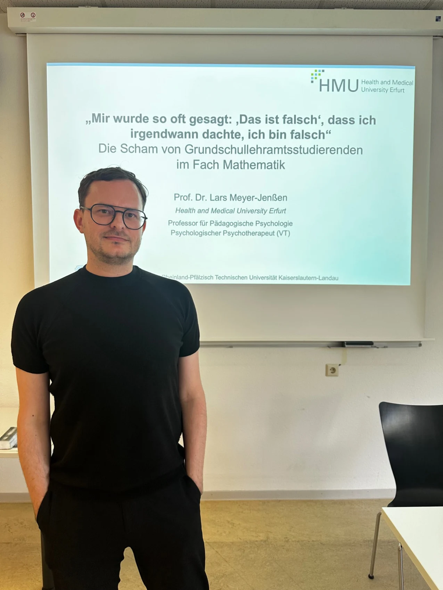

Publications & Academic Communication
A curated selection of peer-reviewed publications, alongside my commitment to Open Science and academic communication.
Open Science
I am committed to transparent and reproducible research. My research practices increasingly include study preregistration and the sharing of research data. Where ethical and data protection requirements permit, I aim to make research data available to the scientific community. Researchers interested in accessing data from my studies are welcome to contact me.
Selected Publications
A selection of peer-reviewed journal articles. Publications under my earlier surname, Jenßen, are listed as originally published.
Gildehaus, L., & Meyer-Jenßen, L. (2026). Social and emotional pathways to shame reduction: An RCT with pre-service teachers. British Journal of Educational Psychology.
Meyer-Jenßen, L., Guljamow, M., Eilerts, K., & Grave-Gierlinger, F. (2026). Disentangling within- and between-person dynamics of pre-service teachers’ self-efficacy for learning and teaching across one semester. Teaching and Teacher Education, 180, 105665.
Meyer-Jenßen, L., Lehmann, M., & Laschke, C. (2026). To be ashamed or not to be ashamed? Profiles of pre-service teachers’ shame in mathematics. Contemporary Educational Psychology.
Pohle, L., & Meyer-Jenßen, L. (2025). Predicting children’s development: Do EC teachers’ professional knowledge and emotions matter? Zeitschrift für Entwicklungspsychologie und Pädagogische Psychologie.
Jenßen, L., Grave-Gierlinger, F., & Eilerts, K. (2023). Comparison of pre- and in-service primary teachers’ digital competence in the field of geometry. Education and Information Technologies, 28, 14857–14876.
Jenßen, L., Möller, R., Eilerts, K., & Roesken-Winter, B. (2022). Pre-service teachers’ shame experiences during their schooling time: Characteristics and effects on their subject-choices at university. Educational Studies in Mathematics, 110, 435–455.
Pohle, L., Hosoya, G., Pohle, J., & Jenßen, L. (2022). The relationship between early childhood teachers’ instructional quality and children’s mathematics development. Learning and Instruction, 82, 101636.
Jenßen, L. (2021). What affects the arrogant, proud or ashamed pre-service teacher in mathematics? Effects of social comparison, gender and self-concept on self-conscious emotions. Social Psychology of Education, 24, 1105–1123.
Jenßen, L., Eid, M., Szczesny, M., Eilerts, K., & Blömeke, S. (2021). Development of early childhood teachers’ knowledge and emotions in mathematics during transition from teacher training to practice. Journal of Educational Psychology, 113(8), 1628–1644.
Blömeke, S., Jenßen, L., Grassmann, M., Dunekacke, S., & Wedekind, H. (2017). Process mediates structure: Relation of preschool teacher education and preschool teachers’ knowledge. Journal of Educational Psychology, 109, 338–354.
Editorial Work
Co-editor of the book series Interdisziplinäre Beiträge zur Bildungsforschung (Interdisciplinary Contributions to Educational Research), published by Berlin Universities Publishing.
Selected Academic Talks & Conference Activities

I regularly present my research at national and international scientific conferences, including meetings of the German Society for Empirical Educational Research (GEBF) and the European Association for Research on Learning and Instruction (EARLI). My conference activities also include organizing and chairing scientific symposia.
I have been invited to present my research, particularly on shame in mathematics education, at several universities, including:
- Technical University of Dortmund (2026)
- University of Cologne (2026)
- University of Potsdam (2026)
- RPTU Kaiserslautern-Landau (2025)
- University of Hildesheim (2025)
- University of Erfurt (2025)
- University of Münster (2024)